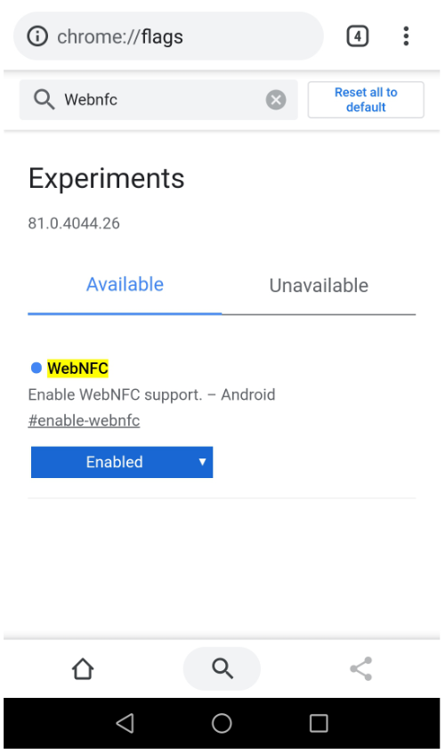

NFC Reader & Writer
Open source NFC Reader & Writer. Read and write NFC tags online, and offline.
Instructions
Step 1 - Make sure your device supports NFC and that NFC option is turned on from your device settings.
Step 2 - Make sure your browser supports reading and writing NFC tags. For the best support, use the latest version of Chrome (Beta).
Step 3 - Tap "Enable NFC" from the top-right corner of this page. A popup should open, asking for your permission to use your device NFC. Grant permission.
Step 4 - Scan any NFC tag with your device, with this page open.
Step 5 - If a tag was read succesfully, you should see a new page/popup that displays the current content of the tag you just read.
Step 6 - After a succesfull read-operation, you have the option to overwrite the tag. Fill out the details you would like to write to the tag, and press "Start write" -button. Now scan the same tag again, and this time it should try to overwrite the tag content.
Supported operations
Supported read operations - Text and URL -record types.
Supported write operations - Text and URL -record types.
What is NFC?
Near Field Communication (NFC) enables wireless communication between two devices at close proximity, usually less than a few centimeters. NFC is an international standard (ISO/IEC 18092) defining an interface and protocol for simple wireless interconnection of closely coupled devices operating at 13.56 MHz (source).
NFC support for web
NFC support is still very limited in web. For the best support, use an Android device with Chrome (Beta) version greater than 81.
To test the reading and writing of NFC tags, you might need to turn on the WebNFC-flag on for Chrome.

tag detected!